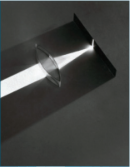
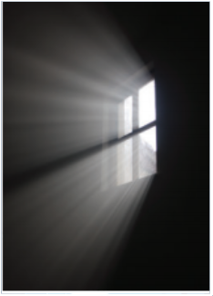
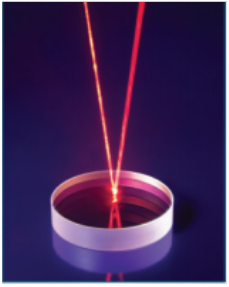
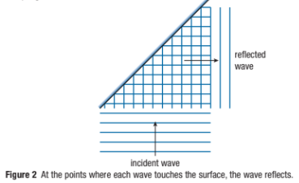
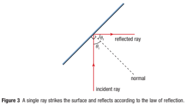
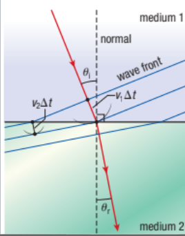
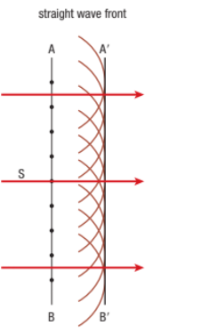
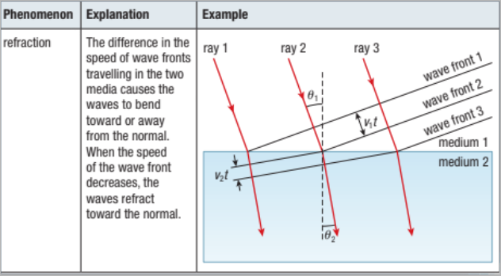

Light: Wave or Particle?
Callout
In 1665, Francesco Grimaldi, who was the first scientist to use the term diffraction, suggested that observable diffraction took place when light passed through a narrow slit, creating rays of colored light, thus showing that light was wave-like in nature.

Also in 1665, Robert Hooke developed his wave theory of light. Christiaan Huygens, in his Treatise on Light (1678), further developed Hooke’s theory that light behaved as a wave.
Huygens formulated the wave principle, called Huygens’ principle. Huygens’ principle states that all points on a wavefront can be thought of as new sources of spherical waves.

Callout
Isaac Newton, in contrast, thought of light as traveling in particles that he called corpuscles (“little particles”). The particles travel in straight lines with maximum velocity and have kinetic energy. Newton’s corpuscular, or particle, theory does not need a medium for light to travel in.

This theory accounted for the rectilinear propagation of light, which means that light travels in a straight line. It also explained some other properties of light, such as reflection, and had some similarities with the much later theory of light.

Newton’s Particle Theory of Light
Rectilinear propagation
Newton argued that since light does not appear to curve, but travels in a straight line, light must consist of particles with extremely high speeds. In addition, since he did not notice any pressure from light, the mass of the particles must be quite low.

Diffraction
Newton argued that light cannot travel around corners as waves do. He argued that Grimaldi’s observations were a result of collisions between light particles at the edges of the slit, rather than from light waves spreading out.

Reflection
Newton showed that, if light particles undergo perfectly elastic collisions, the law of reflection follows from the laws of motion. Horizontal velocity does not change, but vertical velocity is reversed, causing the particles to bounce. The magnitude of the velocity does not change.

Refraction
Newton claimed that particles will bend toward the normal if their speed increases. Particles accelerate at the boundary as they pass from one medium to another and the speed in the medium is greater than in air. This is the opposite of what actually happens.
Huygens’ Principle and the Wave Theory of Light
(a) In Huygens’ construction of a straight wavefront, the wavefront is a straight line even though it is defined by circular waves.
(b) In Huygens’ construction of a spherical wave, the new wavefront is drawn tangent to the circular wavelets radiating from the point sources on the original wavefront.

Huygens’ principle shows the derivation of the laws of reflection and refraction.
Figure 2 shows simplified wavefronts striking a surface. At the point where each wavefront contacts the reflecting surface, a wave reflects.

Figure 3 simplifies reflection even further by showing one incident ray and one reflected ray, obeying the law of reflection.

Huygens’ principle can also be used to derive Snell’s law of refraction, as illustrated in Figure 4. In Huygens’ explanation of the law of refraction, the wavefronts bend due to differences in the speed of light in the two media. In this figure, the wavefront is traveling faster in medium 1 than in medium 2.

Rectilinear propagation
Each point on the wavefront acts as a point source for a new spherical wavelet, and the wave propagates away from the source.

Diffraction
Each point passing through an opening acts as a point source for new spherical wavelets. Huygens’ principle is consistent with large slit widths, edges of obstacles, and slits of the same magnitude as the wavelength.
Reflection
The incident rays hit points on the reflecting surfaces, which then act as point sources for spherical wavelets.
